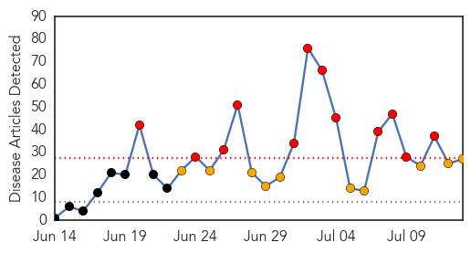
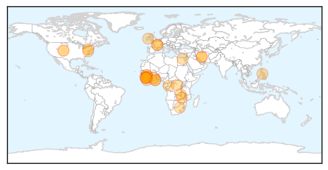
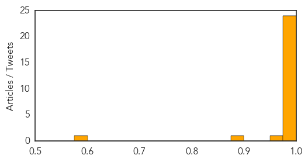

Ebola
30-Day Web Trend
12 alerts, 10 warnings

30-Day Twitter Trend
Article Locations
Article Confidences
Top Articles:
- 1.000
- Ebola deaths rise in Sierra Leone, Liberia
- 1.000
- Ebola deaths mount in Sierra Leone and Liberia
- 1.000
- Ebola virus outbreak in Techiman is imminent
- 1.000
- Uganda alert to Ebola attack
- 1.000
- Ebola 101: The Facts Behind A Frightening Virus
- 1.000
- Worst Ebola outbreak, poor response - Guinea
- 1.000
- Ebola Epidemic Spreads to Freetown
- 0.999
- Zambia National Broadcasting Corporation
- 0.999
- As Ebola stalks West Africa, medics fight mistrust, hostility
- 0.999
- Ebola deaths surge in Sierra Leone and Liberia
- 0.999
- As Ebola stalks West Africa, medics fight mistrust, hostility
- 0.999
- As Ebola stalks West Africa, medics fight mistrust, hostility
- 0.998
- Ebola Outbreak Reaches Sierra Leone Capital of Freetown
- 0.995
- I survived Ebola, but villagers shunned me
- 0.994
- Doctors a 'death sentence'? Patient mistrust aggravates Ebola treatment
- 0.986
- As Ebola stalks West Africa, medics fight mistrust, hostility
- 0.980
- Zambia National Broadcasting Corporation
- 0.980
- Firefighter injured battling Baltimore house fire
- 0.980
- A new venue for Riot Fest
- 0.980
- Heroin overdose rise prompts Maryland crackdown
- 0.980
- Ravens cornerback Jimmy Smith arrested, released by police
- 0.980
- Ravens Cornerback Arrested In Towson
- 0.980
- Police make arrest in Glen Burnie stabbing
- 0.979
- The recent Ebola outbreak
- 0.974
- Ebola spreads to Sierra Leone capital
- 0.881
- Wife of vice president meets with Congo’s sexual violence survivors
- 0.591
- CU-Boulder to offer public health certificate
Top Tweets:
-
No tweets found for Jul 13, 2014